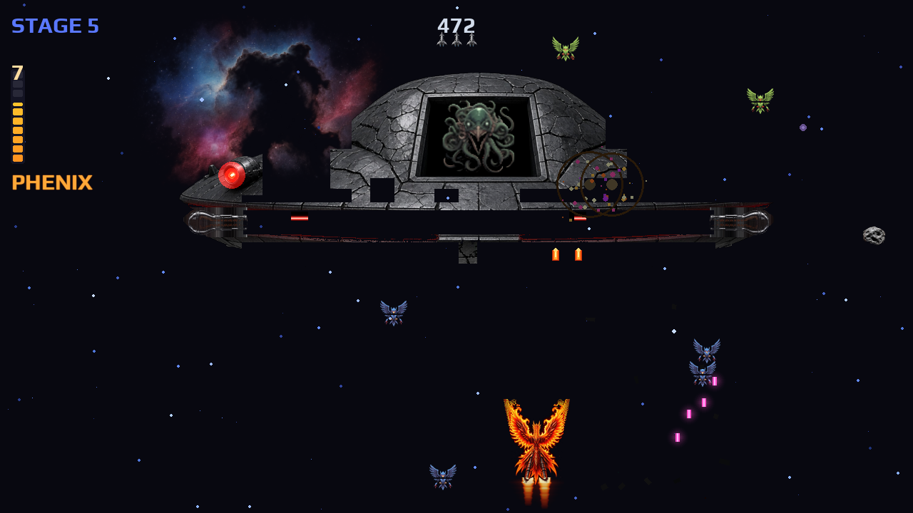
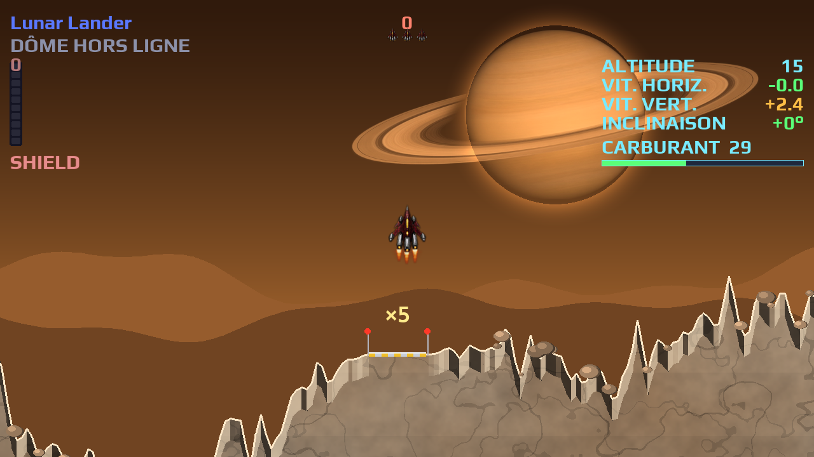
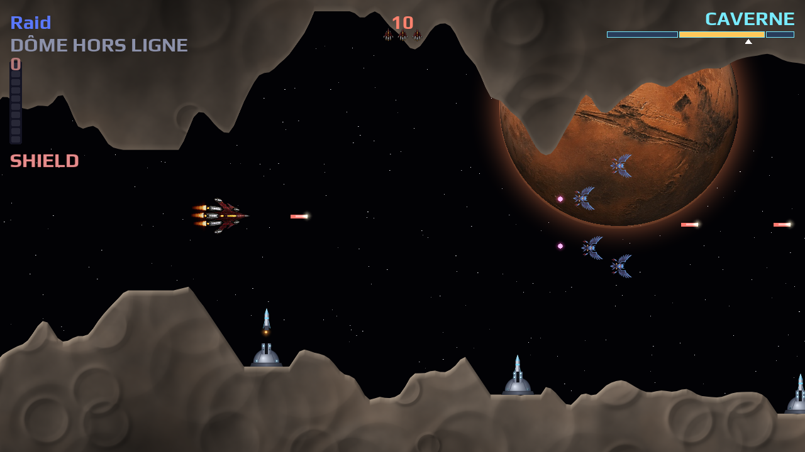
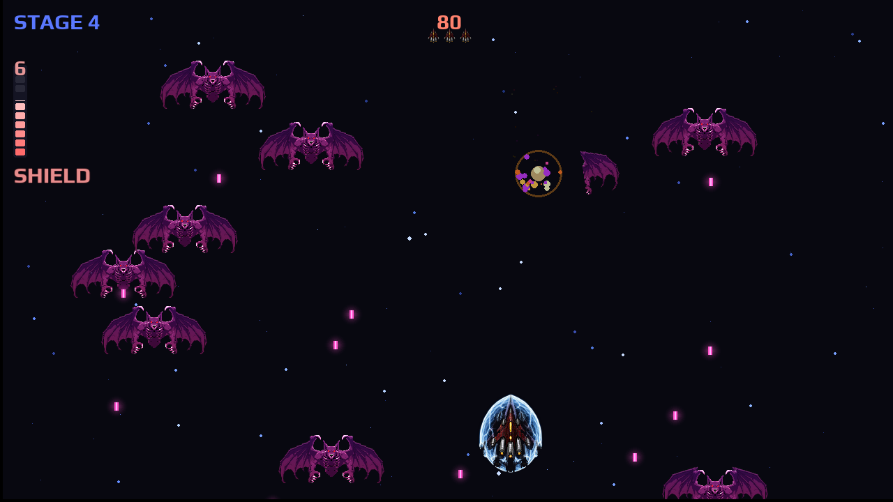
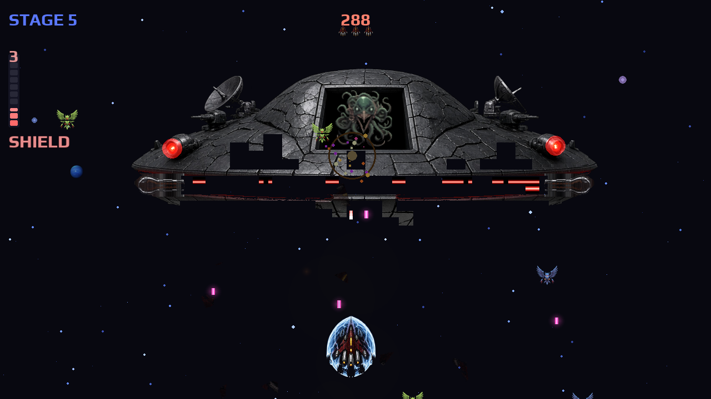
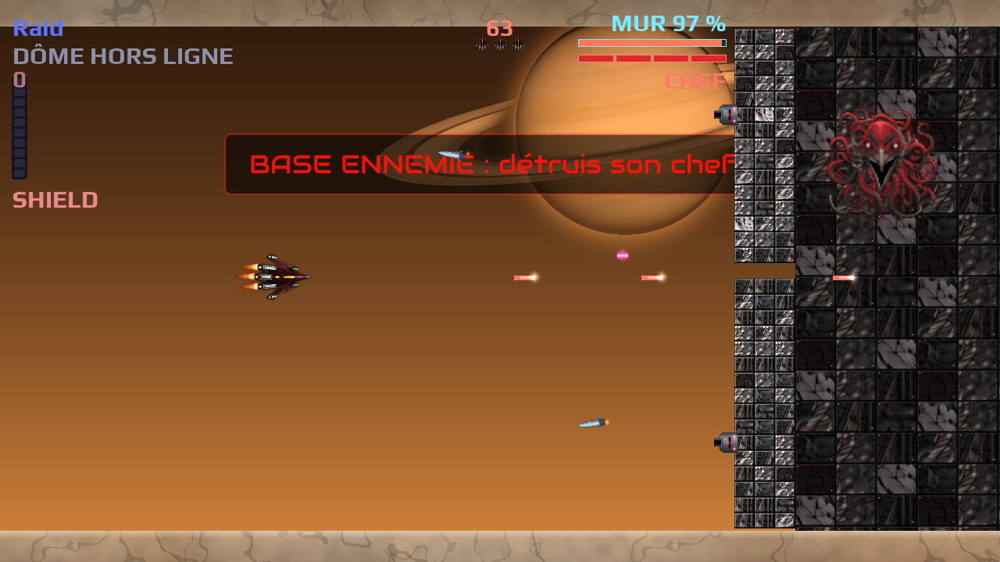

About
Phenix Rebirth is a modern PC remake of the arcade shoot'em up Phoenix (1978 / 1980). Fight through birds, gargoyles and the boss saucer, then loop the cycle faster forever. Play solo, hot seat or simultaneous coop. Charge the PHENIX gauge and become a firebird, or lock down as the SHIELD ship and detonate a barrier. Rise again.
Unofficial fan project — not affiliated with Amstar Electronics, Centuri, or Taito.
Features
- 5 stages + boss saucer, infinite speed progression
- Adventure — a story mode in 3 acts: hangar and workshop, mission map, Bestiary, loot items, 32 more achievements
- Arcade classics inside the Adventure: asteroid belts, Lunar Lander landings, Scramble raids, Space War sentinels, Space Invaders paint missions
- Five FINAL BONUS endless runs once the game is finished: Scramble, Lunar Lander, Asteroids, Guardians, Space War
- PHENIX mode — transform, invulnerability, dual flame shots
- 1 player · 2-player hot seat · 2-player coop
- Keyboard & gamepad (hot-plug in menus, AZERTY-friendly) · every key and pad button can be rebound
- Optional autofire · 3 difficulties: Novice / Normal / Veteran
- 13 languages · local high scores (top 15, coop marked)
- CRT scanlines · ultrawide arcade bezels · attract mode
- GPU present (pygame.SCALED) · 60 / 75 / 120 / 144 Hz · VSync On / Adaptive / Off
- In-game audio mix · animated help & boss core · Novice / Veteran HUD
- Shield ship — 2 s blast barrier, 5 s cooldown, ship select (solo / hot-seat / coop)
- Achievements · jukebox (ID3 titles, PHEQ1 EQ, intro video) · in-game music (OST themes, Lyra Voss songs, your own tracks)
- Stereo SFX · extra starfield asteroids
Gameplay
Screenshots






Download
itch.io · Latest release v1.7.1 — FINAL BONUS - Space War, the Guardians option of the Adventure style, tighter landing tanks, and Bestiary I opening the asteroid belt and Sentinelle I. · GitHub repository
Requirements for source run: Python 3.10+ and Pygame 2.5+.
Windows users can use the release zip or lancer.bat.
Manuals
Manuel FR (PDF) · Manual EN (PDF) — player manuals for v1.7.1